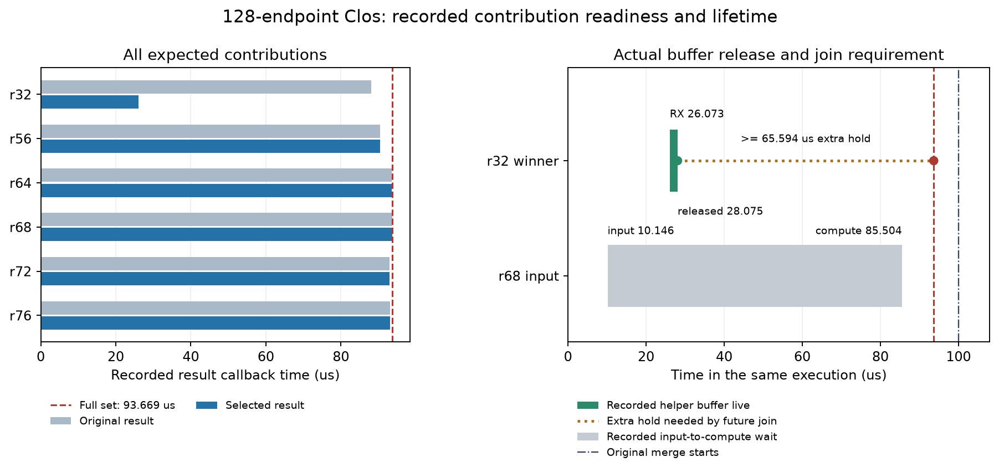

128端点Clos，实际网络记录的只读核查。真实输入为四份R1专家选择，两层、两步Decode；载荷为标记字节、计算为声明值，没有硬件校准。本轮零新网络、零构建。
这次备用贡献提前62.002微秒，但全部贡献到齐的时间没有提前。首调用原件与赢家集合均在93.669微秒到齐，最后结果来自r68，备用修复的是r32。保持其他已记录事件不变时，新增一个消费者不能把这62.002微秒直接变成请求加速。
| 输入 | 层步调用 | 贡献包 | 前沿提前调用数 | 最大前沿提前ns | 实际备用字节 |
|---|---|---|---|---|---|
| 真实R1专家选择 | 16 | 111 | 0 | 0 | 28864 |
| 独立人工输入 | 16 | 32 | 0 | 0 | 1216 |
“0”仅指固定记录中的全贡献就绪差，不是移除备用后重新仿真的时延；移除工作会改变网络和GPU竞争。所有层步调用分别核对，没有把时延相加。

| 贡献包 | 原件结果µs | 赢家结果µs | 最后到齐 | 输入到达µs | 专家实际开始µs |
|---|---|---|---|---|---|
| r32 | 88.075 | 26.073 | 否 | 83.502 | 85.504 |
| r56 | 90.437 | 90.437 | 否 | 7.713 | 85.504 |
| r64 | 93.56 | 93.56 | 否 | 9.351 | 85.504 |
| r68 | 93.669 | 93.669 | 是 | 10.146 | 85.504 |
| r72 | 92.98 | 92.98 | 否 | 10.373 | 85.504 |
| r76 | 93.089 | 93.089 | 否 | 10.703 | 85.504 |
健康r68的输入10.146微秒已到，专家仍等到85.504微秒才开始。原图Dispatch组门限是实际最后前驱，GPU FIFO等待为0。备用结果没有替代原始Dispatch的源确认，所以没有提前解除这道门限；这段等待不能直接归因于GPU计算不足。
备用结果26.073微秒收到，28.075微秒确认并释放；全部贡献93.669微秒才到齐。未来消费者若要在那时读取赢家，至少还需保留65.594微秒，后续合并和排队可能需要更久。现有模式没有消费者，因此这不是现有越界访问，也不是上游漏洞。当前标记内容也不能证明数值等价。
全部贡献就绪93.669微秒到原merge开始99.997微秒相差6.328微秒。这只是这次记录中的间隔，包含必要依赖与同步，不是已证明可消除的时延。研究独立消费者时，必须同时提供同样消费者的无备用基线，不能把消费者自身的作用归给备用策略。
当前结果不支持继续宣称单份备用能获得62微秒的推理收益。下一步先针对阻塞整个EP组的原始Dispatch完成路径，比较成熟SR、尾包探测及完整早备用。只有在这些强基线之后，按通信组完成进度分配恢复预算仍能减少尾部且不拖累健康任务，才值得作为新机制候选。若只是调低RTO或通用重传更早，正常作为基线收尾。
公开工具先复核实际来源、图、原生回调与共享计算，再核对输入目录全部文件SHA。真实431份、人工427份保持不变。早先只看备用结果的解释在本轮被完整集合条件修正，没有删除门限或重跑网络来制造收益。